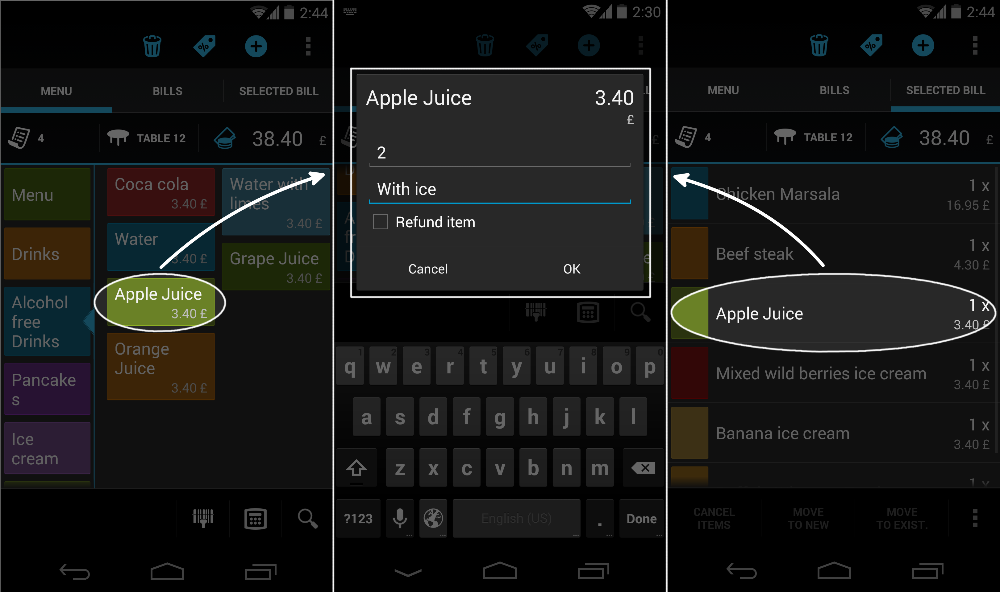
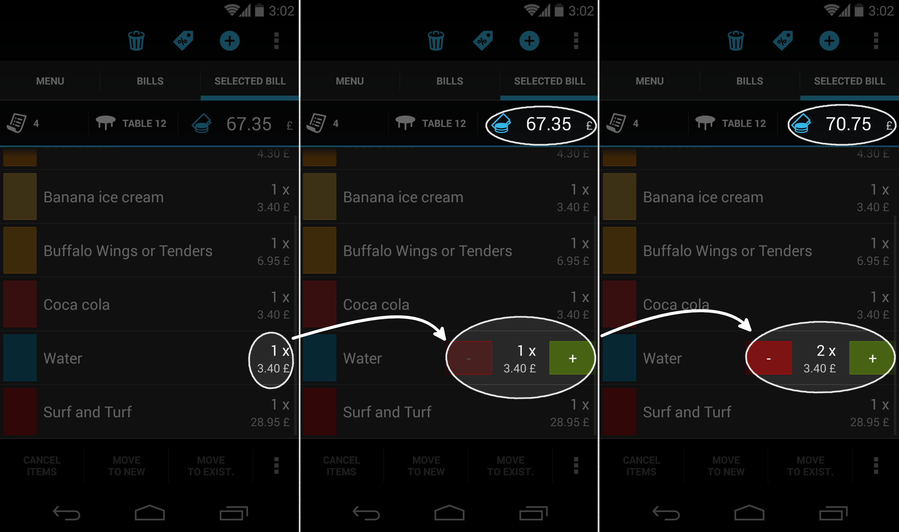

Práca s položkami na účte
Pridanie novej položky na účet
Položky sa pridávajú na účet kliknutím na položku v menu.
Ak nie je v čase kliknutia na menu položku žiadny účet aktívny, tak sa najprv vytvorí nový. V režime pultového predaja vytvorí Papaya účet automaticky a používateľa ničím neotravuje. V režime otvorených účtov vás systém najprv vyzve na výber stola, na ktorý chcete účet priradiť.
Rýchly klik na položku v menu
Rýchlim kliknutím na menu položku pridáte 1 kus položky na aktívny účet.
Dlhšie podržanie položky v menu
Po dlhšom podržaní menu položky sa zobrazí okno, ktoré je určené na zadanie počtu položiek a na zadanie poznámky k objednávke. Tento prístup vám ušetrí čas napr. pri objednávke typu: 3 jemne sýtené chladené minerálky.
Zmena množstva a úprava poznámky
Pri každej položke na účte sa zobrazuje okrem jej názvu, ceny, ... aj množstvo a poznámka.
Množstvo a poznámku položky na účte možno upraviť dlhším podržaním položky na účte. Zobrazí sa okno, v ktorom viete detailne upraviť údaje danej položky.
- Množstvo násobí cenu položky na účte. Rovnako sa však tlačí aj na bon/objednávku (v prípade, že vo vašej prevádzke používate bonovaciu tlačiareň).
- Poznámka sa taktiež tlačí na bon/objednávku. Štandardne sa do poznámky dáva informácia o spôsobe prípravy - napr. pri objednaní minerálky nás zaujíma či je chladená.

Na úpravu množstva položiek na účte má Papaya k dispozícii aj alternatívny spôsob, ktorý je oproti predošlému rýchlejší ak chcete pridať na účet iba zopár položiek:
- Zobrazte si obsah účtu.
- Kliknite na text reprezentujúci počet položiek na účte.
- Zobrazia sa tlačítka +/-, ktorými môžete počet pohodlne meniť.

Informácie o položke
Obsluha si môže na tablete zobraziť podrobnejší popis položky či - v prípade pokrmov alebo miešaných nápojov - jej receptúru. V prípade záujmu tak vie zákazníkovi poskytnúť napr. informácie o zložení či postupe prípravy daného pokrmu. Pre zobrazenie týchto informácii stačí vybranú menu položku dlhši podržať - zobrazí sa okno s troma záložkami.
- Prvá umožňuje zadať počet položiek v prípade objednávky (viz predchádzajúci bod)
- V druhej záložke sa zobrazí popis položky (detailnejší popis daného tovaru)
- Tretia záložka obsahuje receptúru, ak v prípade danej položky ide o pokrm alebo miešaný nápoj
Detailnejší popis položky a receptúra sa zobrazia, iba ak sú pre danú menu položku zadané. Zadávať ich je možné v procese "Editácie menu položiek".
Zrušenie položky
Položku na účte je možné zrušiť iba v prípade, ak sa nachádza na otvorenom účte.
- Označte jednu alebo viacero položiek na účte.
- V spodnej časti obrazovky sa sprístupnia tlačidlá na manipuláciu s označenými položkami.
- Kliknite na ikonku Zrušiť položku.

Zrušenie vybonovanej/nevybonovanej položky
Ak používate vo vašej prevádzke bonovaciu tlačiareň, tak sa zrušená položka bude zobrazovať na účte v závislosti od toho či bola alebo nebola vybonovaná.
- Zobrazovanie nevybonovanej položky Položka, ktorá zatiaľ nebola vybonovaná, sa na účte po jej zrušení nezobrazuje. Dôvodom je, že nevybonované položky sa nepovažujú za záväzné - teda kuchár ani barman ešte nedostali žiadnu objednávku. To, že sa po zrušení takéto položky na účte nezobrazujú účet sprehľadňuje. V skutočnosti si systém zrušenie každej položky pamätá a majiteľ ju vidí na účte vo Web admine.
- Zobrazovanie vybonovanej položky Položka, ktorá už bola vybonovaná, sa považuje za záväznú objednávku. Takáto položka sa na účte bude zobrazovať stále, teda aj po jej zrušení. Na zrušenie vybonovanej položky potrebuje používateľ oprávnenie.
Oprávnenie na zrušenie vybonovanej položky
Ak vašim zamestnancom nedôverujete, môžete im odobrať oprávnenie s názvom Zrušenie vybonovanej položky na účte. Ideálne by toto oprávnenie mal mať zamestnanec, ktorému dôverujete.
Týmto oprávnením zamedzíte podvodom, keď sa čašník snaží zmazať pár položiek z účtu tesne pred jeho uzavretím. Sumu za zrušené položky by si potom mohol nechať ako neoprávnený tringelt.
Používateľom bez oprávnenia sa po kliknutí na tlačítko Zrušiť položku zobrazí notifikácia, položka sa nezruší.